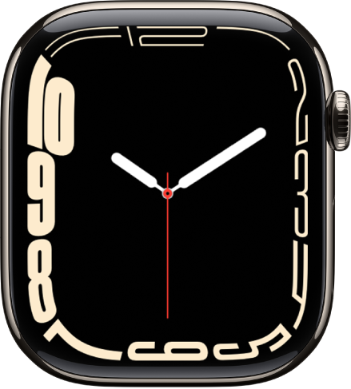

此表盘（在 Apple Watch SE 上不可用）会逐渐变换以突出显示当前这一小时。数字采用自定义字体，专为适合屏幕边缘而设计，并从这一小时向下一小时顺滑移动。轻点表盘，然后旋转数码表冠以展开当前这一小时以外的数字。
下方的文件数包括本地化资源。固件名称键能确认包的归属；组件的圆屏点击边界、亮屏过渡与 AOD 对照均待设备验证。
原始包 已解析属性表 Mach-O 方法与成员 ARM64 汇编 解出的图集
.strings × 44 .plist × 2 .car × 1 无扩展名 × 1
NTKProteusFaceBundle.bundleFACE_STYLE_PROTEUS_DESCRIPTIONEDIT_MODE_LABEL_PROTEUS_CONTENTEDIT_OPTION_LABEL_PROTEUS_STYLE_SHARPEDIT_OPTION_LABEL_PROTEUS_STYLE_SOFTEDIT_MODE_LABEL_PROTEUS_STYLE色组与设备条件 NTKProteus.color.plist 共享色组与默认值
-[NTKProteusContentView applyTransitionTritiumOnWithFraction:];-[NTKProteusContentView _updateScaleTritiumFraction:];-[NTKProteusFaceColorPalette tritium_hourHandInlay];-[NTKProteusFaceColorPalette tritium_hourHandStroke];-[NTKProteusFaceView tritium_didTransitionToTritiumOn];-[NTKProteusFaceView _setTritiumProgress:];-[NTKProteusFaceView tritium_didTransitionToTritiumOff];-[NTKProteusFaceView tritium_usesWidgetTransitionPresetColors];-[NTKProteusFaceView tritium_transitionToTritiumOnWithProgress:];-[NTKProteusFaceView tritium_createFaceAnimator];-[NTKProteusFaceView _updateColorForTritiumWithProgress:];-[NTKProteusFaceView tritium_transitionToTritiumOffWithProgress:];-[NTKProteusFaceView _adjustedTritiumFraction];-[NTKProteusFaceView _tritium_updateComplicationColors];-[NTKProteusColorPalette secondHand];-[NTKProteusContentView applyTransitionTritiumOnWithFraction:];-[NTKProteusContentView applyTransitionFraction:fromStyle:toStyle:];-[NTKProteusContentView _updateScaleTransitionFraction:forLabels:];-[NTKProteusFaceView tritium_didTransitionToTritiumOn];-[NTKProteusFaceView _setComplicationAlphaForTransitionFraction:fromOption:toOption:customEditMode:slot:];-[NTKProteusFaceView tritium_didTransitionToTritiumOff];-[NTKProteusFaceView _startTurnoverAnimation];-[NTKProteusFaceView tritium_usesWidgetTransitionPresetColors];-[NTKProteusFaceView _applyTransitionFraction:fromBackgroundStyle:toBackgroundStyle:];-[NTKProteusFaceView _applyTransitionFraction:fromOption:toOption:forCustomEditMode:slot:];-[NTKProteusFaceView tritium_transitionToTritiumOnWithProgress:];-[NTKProteusFaceView tritium_createFaceAnimator];-[NTKProteusFaceView _scheduleTurnoverAnimation];-[NTKProteusFaceView _applyTransitionFraction:fromStyle:toStyle:];-[NTKProteusFaceView _startAnimationTimer];-[NTKProteusFaceView _secondsUntilMinute:second:from:];-[NTKProteusFaceView tritium_transitionToTritiumOffWithProgress:];-[NTKProteusFaceView _stopAnimationTimer];-[NTKProteusFaceView _applyTransitionFraction:fromColor:toColor:];-[NTKProteusFaceView _configureForTransitionFraction:fromEditMode:toEditMode:];-[NTKProteusFaceView setOverrideDate:duration:];-[NTKProteusMotion duration];+[NTKProteusWave waveWithSpeed:easeInDuration:easeOutDuration:direction:];-[NTKProteusWave easeOutDuration];-[NTKProteusWave initWithSpeed:easeInDuration:easeOutDuration:direction:];-[NTKProteusWave easeInDuration];-[NTKProteusColorPalette background];-[NTKProteusColorPalette digitColor];-[NTKProteusColorPalette simpleTextComplicationColor];-[NTKProteusColorPalette digit];-[NTKProteusColorPalette secondHand];-[NTKProteusColorPalette circularComplicationAColor];-[NTKProteusColorPalette circularComplicationB];-[NTKProteusColorPalette digitContrast];-[NTKProteusColorPalette hourHandInlay];-[NTKProteusColorPalette hourHandStroke];-[NTKProteusColorPalette simpleTextComplicationContrast];-[NTKProteusContentView _updateColorPalette];-[NTKProteusContentView layoutSubviews];-[NTKProteusContentView initWithFrame:style:backgroundStyle:colorPalette:device:];-[NTKProteusContentView setColorPalette:];+[NTKProteusFace _richComplicationSlotsForDevice:];+[NTKProteusFace _orderedComplicationSlots];+[NTKProteusFace _defaultSelectedComplicationSlotForDevice:];-[NTKProteusFace _complicationSlotDescriptors];-[NTKProteusFace _numberOfOptionsForCustomEditMode:slot:];-[NTKProteusFace _defaultOptionForCustomEditMode:slot:];-[NTKProteusFace _indexOfOption:forCustomEditMode:slot:];-[NTKProteusFace _optionAtIndex:forCustomEditMode:slot:];-[NTKProteusFaceColorPalette configurationDidChange:];-[NTKProteusFaceColorPalette identifier];-[NTKProteusFaceColorPalette digitColor];-[NTKProteusFaceColorPalette initWithFaceClass:device:];-[NTKProteusFaceColorPalette _circularComplicationAColor];-[NTKProteusFaceColorPalette galleryFaceColorPalette];-[NTKProteusFaceColorPalette tritium_hourHandInlay];-[NTKProteusFaceColorPalette tritium_hourHandStroke];-[NTKProteusFaceColorPalette _background];-[NTKProteusFaceColorPalette setBackgroundStyle:];-[NTKProteusFaceColorPalette backgroundStyle];-[NTKProteusFaceColorPalette _simpleTextComplicationColor];-[NTKProteusFaceColorPalette copyWithZone:];-[NTKProteusFaceColorPalette _contrastRatio];-[NTKProteusFaceView applyColorOnAnalogHands];-[NTKProteusFaceView _complicationAlphaForEditMode:];-[NTKProteusFaceView _setComplicationAlphaForTransitionFraction:fromOption:toOption:customEditMode:slot:];-[NTKProteusFaceView createFaceColorPalette];-[NTKProteusFaceView tritium_usesWidgetTransitionPresetColors];-[NTKProteusFaceView _applyTransitionFraction:fromOption:toOption:forCustomEditMode:slot:];-[NTKProteusFaceView layoutSubviews];-[NTKProteusFaceView _applyBreathingFraction:forCustomEditMode:slot:];-[NTKProteusFaceView _updateViewColorsWithPalette:];-[NTKProteusFaceView _applyOption:forCustomEditMode:slot:];-[NTKProteusFaceView _cleanupAfterEditing];-[NTKProteusFaceView _updateColorForTritiumWithProgress:];-[NTKProteusFaceView _simpleTextComplicationColorForEditMode:];-[NTKProteusFaceView _fadesComplicationSlot:inEditMode:];-[NTKProteusFaceView _updateSubDialRichComplicationsColor:alternateColor:];-[NTKProteusFaceView _configureComplicationView:forSlot:];-[NTKProteusFaceView colorPalette];-[NTKProteusFaceView _legacyShouldSwapGraphicCircularComplicationColors];-[NTKProteusFaceView _applyComplicationColor:];-[NTKProteusFaceView _applyTransitionFraction:fromColor:toColor:];-[NTKProteusFaceView _tritium_updateComplicationColors];-[NTKProteusFaceView _updateSimpleTextLabelColor:];-[NTKProteusFaceView configureComplicationAlphaFraction:fromEditMode:toEditMode:];-[NTKProteusFaceView _applyRubberBandingFraction:forCustomEditMode:slot:];